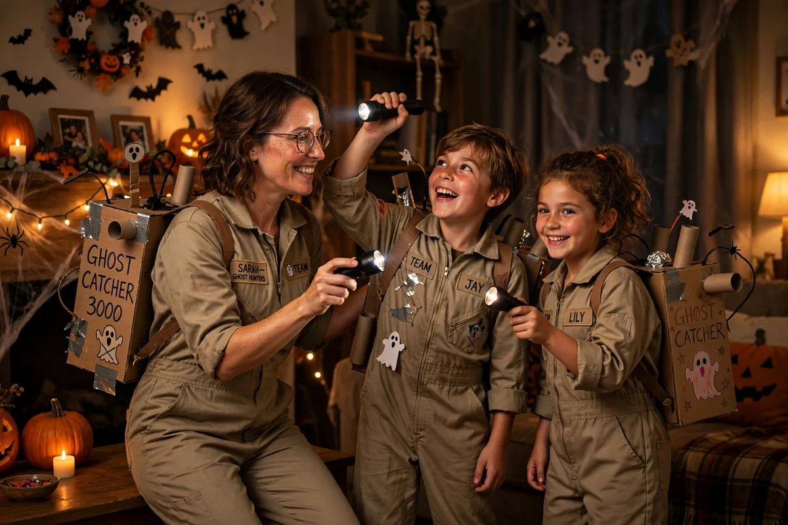
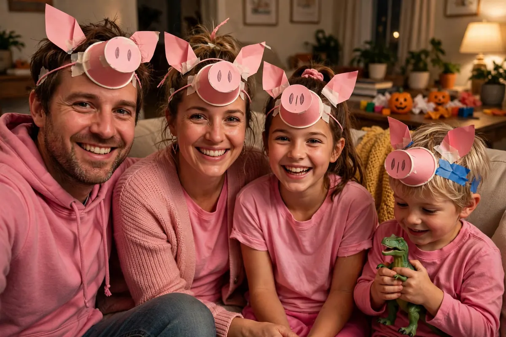
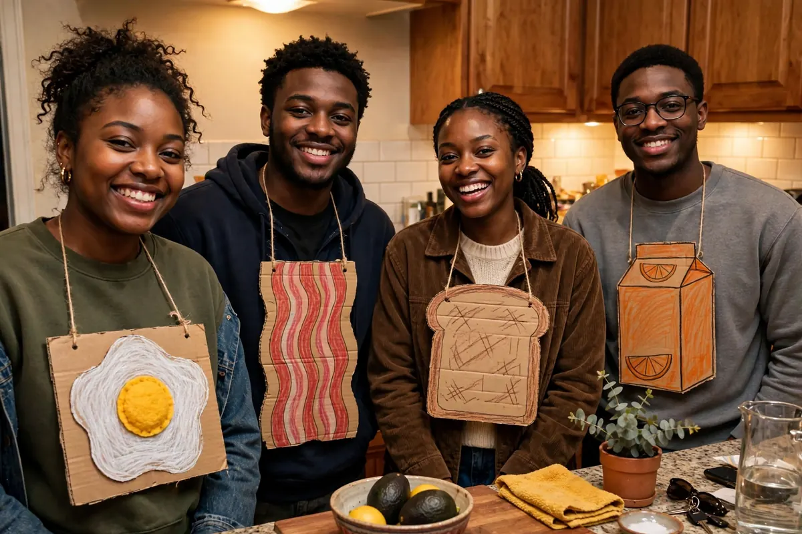
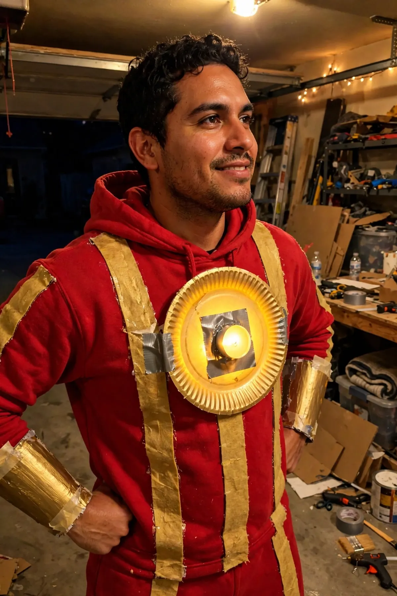

tonight's moon
We know your Halloween costume.
5 questions to see if we're right.
Still don't have a costume? Same. Let's fix that in 2 minutes.
5 questions · 2 minutes · free forever
165 people found their costume this week. You're next.
Or search 137 costumes directly
Discover costumes · Top 10 nationally → · Easy classics, compared →
 Snow Sisters
🔥 #2
Snow Sisters
🔥 #2 Lost Tourist
🔥 #3
Lost Tourist
🔥 #3 Aussie Dog Family
Aussie Dog Family
 Mermaid Crew
Mermaid Crew

Ghost Hunters
Little Pig Family
Breakfast Buffet
The Tin HeroMore ways to explore
Tick what you own, we rank costumes by it.
Teachers: one theme for the whole class, or one costume per kid, with one class shopping list.
No account, no signup. Your quiz answers stay on your phone, and we only track anonymous usage stats.
Question 1 of 5
Your costume
🎃 Here is what you got
This is our top pick for you. Tap “Claim this costume” to save it and plan your costume, or see the other ideas below.
Every idea in the bank
All ideas
Prefer browsing to quizzing? Here is the whole shelf.
From browsing
Costume detail
About this site
What this is
Answer 5 quick questions. Get 3 Halloween costume ideas picked for you, each with a one-line how-to. For yourself, your kid, your partner, your group, or the whole family.
Example
You answer: couple, funny, low effort.
You get: Ketchup & Mustard: red bottle tunic and cap for one, yellow for the other.
Tap “Claim this costume” to save it, text it to your partner, and get an AI plan for putting it together.
Your answers are scored against 137 hand-picked ideas. No randomness, no account, no email. Your answers never leave your phone; we only track anonymous usage stats.
Questions or a costume we should add? Email hello@pickmycostume.com.
Halloween by the numbers: Americans are expected to spend $13.5 billion on Halloween in 2026, and half of everyone celebrating dresses in costume. Nearly half of shoppers use AI to brainstorm costume ideas. (Source: NRF's 2026 Halloween survey.) Google's Frightgeist tracks the most-searched costumes each October. Ideas marked Trending ride a top-ranked costume lane in NRF's 2026 survey; each card shows its stat and source.
Built with Muse. Made by Billy Litner.
How it works
- Answer 5 questions. Five quick questions about who the costume is for and the vibe you want. About 2 minutes, free forever.
- Get 3 ideas picked for you. Your answers are scored against 137 hand-picked costume ideas. Each idea comes with a one-line how-to.
- Claim it and make it. Tap "Claim this costume" to save it, text it to your group, and open the guide for materials, cost, and build steps.
Quick answers
Is it really free?
Yes. No account, no email, no checkout. Answer 5 questions and get 3 costume ideas, each with a how-to. Make your list, screenshot it, and take it to the store.
Do I need to download anything?
No. It is a website, and the quiz runs in your browser. Your answers never leave your phone. We only count anonymous visits.
What if I do not like the ideas I get?
Answer the quiz differently and try again, or skip the quiz and browse all 137 costume guides yourself. Every guide shows what you need, what it costs, and how long it takes.